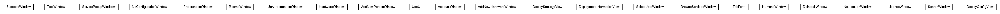

JavaScript is disabled on your browser.
Skip navigation links
Overview
Package
Class
Use
Tree
Deprecated
Index
Help
Prev Package
Next Package
Frames
No Frames
All Classes
Package org.universAAL.tools.ucc.windows

Class Summary
Class
Description
AccountWindow
AddNewHardwareWindow
AddNewPersonWindow
BrowseServicesWindow
DeinstallWindow
DeployConfigView
DeploymentInformationView
DeployStrategyView
HardwareWindow
HumansWindow
LicenceWindow
NoConfigurationWindow
NotificationWindow
PreferencesWindow
RoomsWindow
SearchWindow
SelectUserWindow
ServicePopupWindodw
SuccessWindow
TabForm
ToolWindow
UccUI
UsrvInformationWindow
Skip navigation links
Overview
Package
Class
Use
Tree
Deprecated
Index
Help
Prev Package
Next Package
Frames
No Frames
All Classes
Copyright © 2018
universAAL Consortium
. All rights reserved.